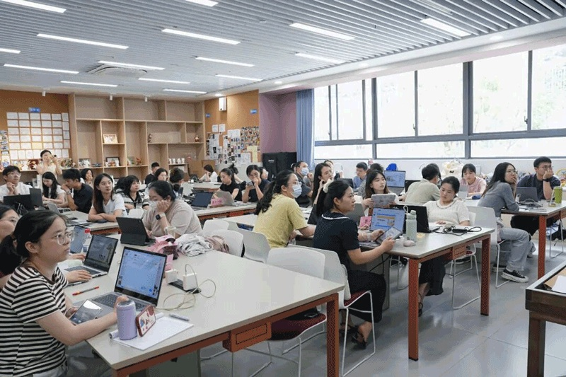
CocoRobo
PREPARED FOR
UNESCO
DIGITAL LEARNING WEEK 2026
TEACHER AGENCY · PRACTICE & RESEARCH
From AI Tool Users to AI Agent Creators
Helping teachers shape AI support for learning.
Haiyang Xin · CocoRobo Ltd.
Paris · 2026
A SHARED STARTING POINT
What is a pedagogical AI agent?
An AI helper set up for a clear teaching or learning goal.
In our work, “pedagogical” means for teaching and learning.
Teachers shape it
They set its role, materials, steps and limits.
It supports learning
It asks questions, guides practice and gives feedback.
Why use one?
Turn a teaching plan into support that can be tested, reused and revised.
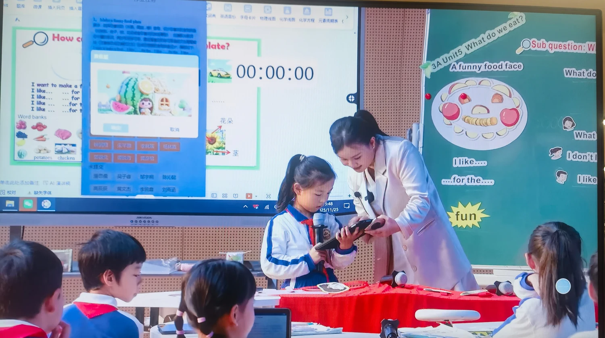
English speaking practice · Pingshan
The teacher sets the purpose. The agent provides the agreed support.
TEACHERS SHAPE AI’S ROLE
One goal. Two views.
Teacher agency means having the ability and room to make teaching choices.
1 · Practice
How do policy, local support and teacher design work together?
2 · Research
What do teachers learn as they build agents? What helps them keep creating?
1,000+
teachers reached across four Shenzhen districts and partner schools
Our teacher development work: April 2025–April 2026
1 · PRACTICE / PROVINCIAL POLICY
Guangdong: shared goals for AI education
Two literacy frameworks + one curriculum outline
2 + 1
Guangdong Department of Education 9 April 2025 · Trial documents
Teacher AI literacy
Teachers’ knowledge, skills and responsibilities.
Student AI literacy
Understand and use AI with care and good judgment.
AI curriculum outline
Goals, content and teaching across school stages.
Connect teacher learning, student goals and the curriculum.
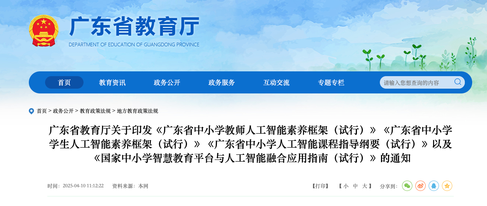
1 · PRACTICE / SHENZHEN MUNICIPAL EDUCATION BUREAU
Shenzhen: access and chances to create
A shared starting point
Shenjiao AI brings together 10 approved learning platforms.
Teachers create applications
Three city contests drew over 2,000 teachers.
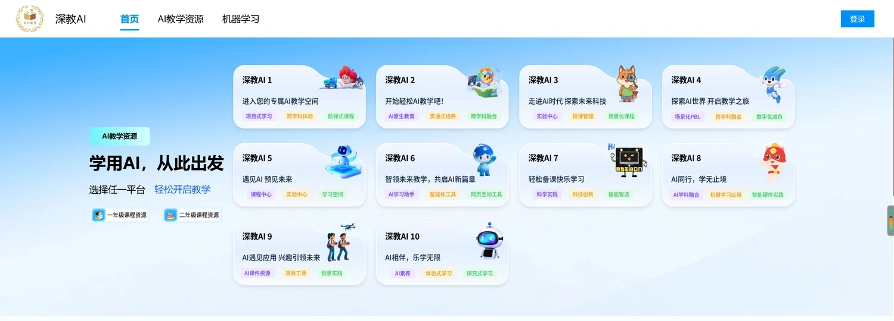
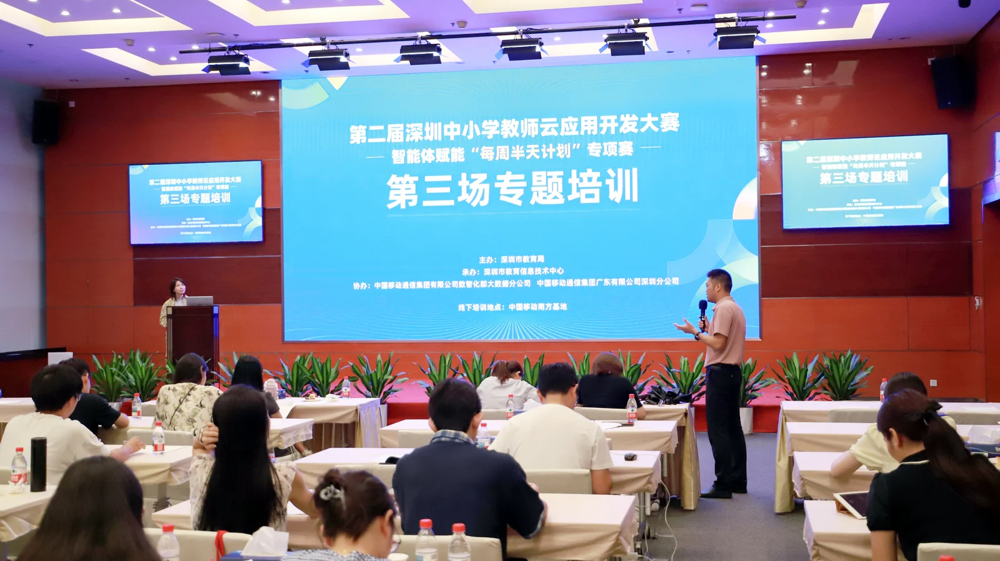
City platform and teacher application contest
Give teachers access to tools—and chances to build with them.
1 · PRACTICE / PINGSHAN DISTRICT EDUCATION BUREAU
Pingshan: help teachers lead AI use
Learn, build and improve
Three groups of teachers moved from prompts to teaching agents.
Teachers decide
In English practice, AI gives feedback. Teachers set the standards.
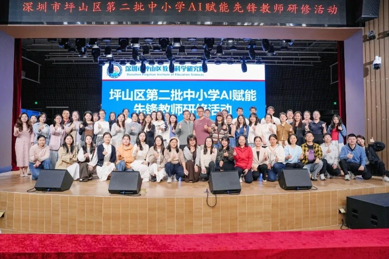
AI pioneer teacher programme · Pingshan
Write prompts → Build agents → Test and revise
Help teachers build AI support and decide how to use it.
1 · PRACTICE / LIYUAN EDUCATION GROUP, FUTIAN
Liyuan: teachers shape the standards
Agree on the criteria
Experts draft indicators. Teachers rate them. The team finalizes the set.
Build, test and revise
Turn the criteria into an AI analysis tool. Try it in class and use teacher feedback.
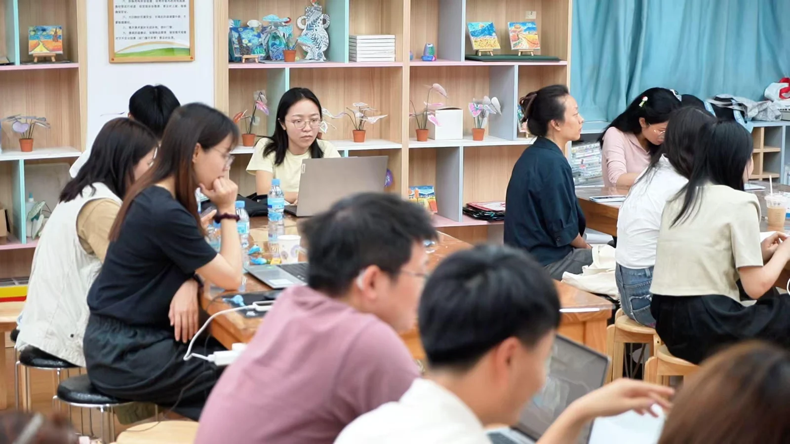
Teachers develop shared practices · Liyuan
Involve teachers in the standards that guide AI.
1 · PRACTICE / ENGLISH · TEACHER LUO MIN
Bao’an: give each agent a clear job
T · Task design
Help the teacher create speaking tasks.
A · Practice and assessment
Act as an AI speaking examiner.
S · Standards
Match activities to the criteria.
K · Feedback
Use learning data to give feedback.
Ms Luo’s TASK workflow · CocoRobo
TASK = Tasksheets · Assessments · Standards · Key competences
Start with the teaching method. Then give AI clear roles.
PRACTICE → RESEARCH
Why does practice need research?
A working example is a start. We also need to understand how it works.
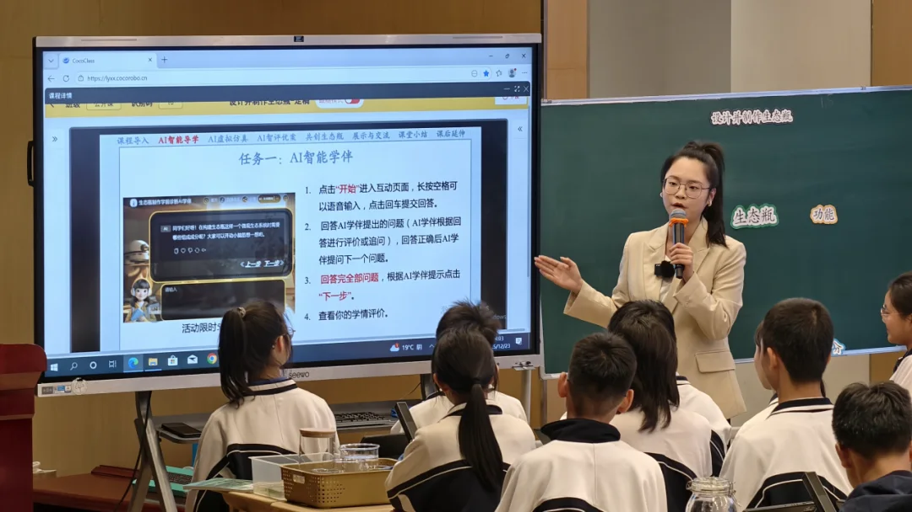
Biology inquiry · Futian Liyuan Primary School
Learn what changes
How do teachers’ designs and choices develop?
Understand the conditions
What helps teachers keep creating?
Make lessons useful elsewhere
What needs to change in another school?
Use evidence to improve tools, training and classroom practice.
2 · RESEARCH / TIMELINE & OUTPUTS
A year of practice, evidence and revision
Three teacher groups in Pingshan · April 2025–April 2026
APR 2025
First prompts and agents
SEP 2025
Subject groups and workflows
APR 2026
Deeper study of teacher learning
Evidence: designs, revisions, platform use, surveys and interviews.
4 accepted conference papers
AERA 2026: 2 · ISLS 2026: 2
Ongoing journal work
Boundary Learning synthesis
Each round informed the next. Research returns to practice.
2 · RESEARCH / FINDING 1
Building agents makes teaching choices visible
A teaching idea becomes a design that can be tested and changed.
Make choices clear
What should the agent do? What should the student do?
Learn through testing
Test it. Discuss what happens. Improve it.
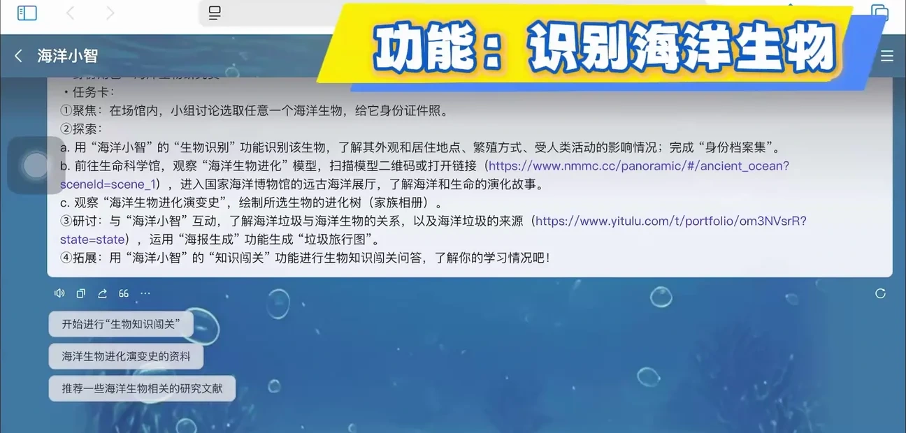
Teacher-made application · city contest example
Look at what teachers build and revise, as well as what they report.
2 · RESEARCH / FINDING 2
Teachers need support to keep creating
Some create and revise
Others explore. Some take little part.
Training is only a start
Choice, skills, belonging and school support matter.
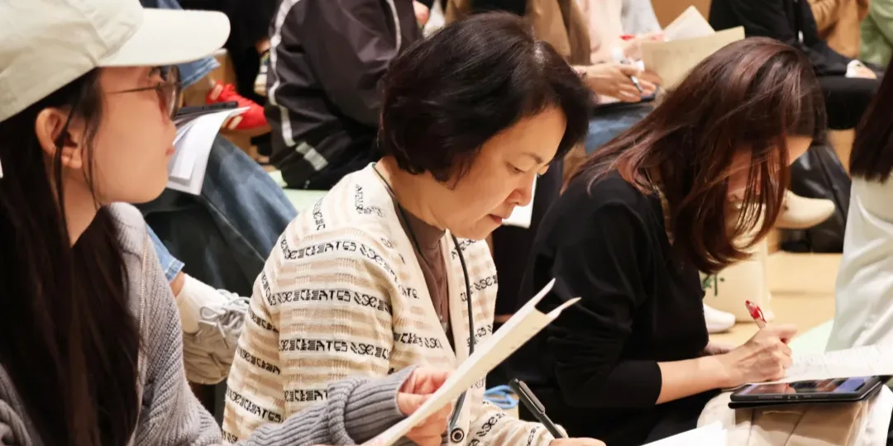
Teachers reviewing an English-assessment task · programme material
Give teachers time, trusted peers and people they can turn to for help.
2 · RESEARCH / A WORKING FRAMEWORK
Boundary Learning: deciding where AI belongs
Teachers learn to decide when AI should help—and when it should step back.
01
Task
Is this a good task for AI?
02
AI limits
Can it do the task well?
03
Responsibility
Who should make the key decisions?
04
Design
What roles, steps and limits should we set?
A working framework, still under development.
Example: if AI answers too soon, ask students to try first.
OUR MODEL / RESEARCH–PRACTICE PARTNERSHIP
Four partners make the work possible
An RPP brings partners together over time to study and improve a shared problem.
CocoRobo · enterprise
Lead the programme; build, improve and support the tools.
University teams
CUHK · HKU · EdUHK: research design, theory and analysis.
Government partners
Local coordination, policy alignment and access.
Schools & teachers
Real needs, classroom trials and teaching decisions.
Together, we connect classroom needs, working tools and research.
WHAT OTHERS CAN TAKE AWAY
Make the partnership useful in practice
Build teacher agency through shared work.
1
Start with a shared teaching problem
Let teachers help define the goals and the questions.
2
Connect creation, evidence and redesign
Use findings to change tools and professional learning.
3
Fund the work between meetings
Support coordination, technical help and teacher time.
Judge success by better teaching choices and usable knowledge.
LET’S LEARN FROM EACH OTHER
You are welcome in Shenzhen.
Visit our schools. Meet the teachers. See their work in real lessons.
Shenzhen is honoured to host APEC this year.
APEC Economic Leaders’ Meeting
18–19 November 2026 · Shenzhen, China
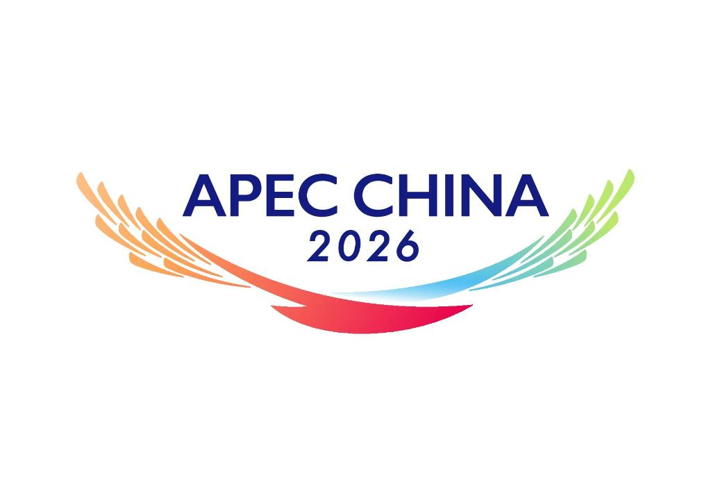
APEC China 2026 · official emblem
Contact me to explore a school visit and exchange ideas.
VISIT · SHARE · COLLABORATE
Let’s keep learning together.
Scan the slides or explore the full submission and research.
This presentation
Online slides · current version
Submission materials
UNESCO submission · studies and evidence
Haiyang Xin · Founder & CEO, CocoRobo Ltd.
Contact me to arrange a school visit.